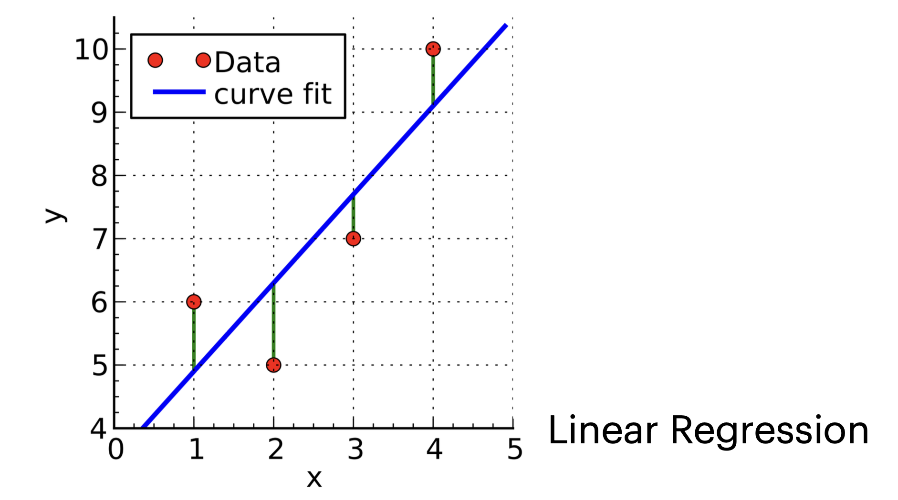

1. Introduction: What is Machine Learning?
전통적인 프로그래밍이 규칙(Rule)을 사람이 직접 작성하여 데이터를 처리했다면, 머신러닝(Machine Learning)은 데이터로부터 의사결정(Decision)이나 예측(Prediction)을 수행하는 모델을 학습하는 과정입니다.
가장 직관적인 예시로 사진 분류를 들 수 있습니다. 우리가 찍은 사진이 “풍경(Landscape)”인지 “음식(Food)”인지 구분하는 문제를 생각해봅시다.
이처럼 머신러닝의 주된 초점은 데이터(Data)에 기반하여 유용한 결정이나 예측을 내리는 것입니다. 얼굴 인식(Face detection)이나 음성 인식(Speech recognition) 등이 대표적인 예입니다.
2. Foundations: Assumptions and Goals
- 과거의 데이터를 가지고 미래를 예측한다는 것은 논리적으로 비약이 있을 수 있습니다. 이를 수학적, 통계적으로 정당화하기 위해 머신러닝에서는 중요한 가정과 목표를 설정합니다.
2.1. The IID Assumption
- 우리가 수집한 학습 데이터(Training Data)가 미래의 데이터(Query)를 대변할 수 있으려면, 다음과 같은 강력한 가정이 필요합니다.
I.I.D. (Independent and Identically Distributed)
- 모든 학습 데이터는 서로 독립적(Independent)이다.
- 학습 데이터와 테스트 데이터(Query)는 동일한 확률 분포(Identically Distributed)에서 추출된다.
- 이 가정이 성립해야만 과거의 데이터로 학습한 모델이 미래의 상황에서도 작동할 것이라고 기대할 수 있습니다.
2.2. Two Main Problems
- 머신러닝이 해결해야 할 근본적인 문제는 크게 두 가지로 요약됩니다.
- Estimation (추정):
- 데이터에는 필연적으로 잡음(Noise)이 섞여 있습니다. (예: 같은 치료를 받아도 환자마다 결과가 다를 수 있음)
- 이러한 잡음이 섞인 데이터를 집계하여 정확한 예측값을 찾아내는 과정입니다.
- Generalization (일반화):
- 학습 과정에서 보지 못한(Unseen) 새로운 상황이나 실험에 대해 결과를 예측하는 능력입니다.
- 단순히 주어진 데이터를 외우는 것이 아니라, 데이터 너머의 통찰(Insight)을 확장하는 것이 목표입니다.
3. Problem Characteristics & Solutions
머신러닝 문제를 구조적으로 바라보기 위해 문제(Problem)와 해결책(Solution)의 특성을 나누어 생각할 수 있습니다.
Problem Characteristics:
- Problem Class: 학습 데이터의 성격과 테스트 시 주어지는 질문(Query)의 유형. (예: 지도 학습 vs 비지도 학습)
- Assumptions: 데이터 소스나 솔루션의 형태에 대한 사전 지식.
- Evaluation Criteria: 시스템의 성능을 어떻게 측정할 것인가?
Solution Characteristics:
- Model Type: 데이터의 어떤 측면을 모델링할 것인가?
- Model Class: 어떤 파라미터화된 모델 군(Parametric class)을 사용할 것인가? (예: 선형 모델, 신경망 등)
- Algorithm: 모델을 데이터에 적합(Fitting)시키고 예측을 수행하는 계산 과정.
4. Problem Class: Supervised Learning (SL)
- 지도 학습(Supervised Learning)은 학습 시스템에 입력(Input)과 그에 상응하는 정답(Output, Label)이 함께 주어지는 경우입니다.
- 출력 값의 형태에 따라 크게 두 가지로 나뉩니다.
4.1. Classification (분류)
출력값 \(y\)가 이산적인(Discrete) 작은 집합에서 선택되는 경우입니다.
Training Data: \(\mathcal{Z}_n : \{(x^{(1)}, y^{(1)}), ..., (x^{(n)}, y^{(n)})\}\)
- \(x^{(i)} \in \mathbb{R}^d\): 분류할 객체 (특징 벡터)
- \(y^{(i)}\): 타겟 값 (Target value, Class label)
Types:
- Binary Classification: \(y\)가 두 가지 값 중 하나 (예: 스팸/햄, 양성/음성).
- Multi-class Classification: \(y\)가 여러 개의 클래스 중 하나.
4.2. Regression (회귀)
출력값 \(y\)가 연속적인(Continuous) 실수 값이거나 아주 큰 유한 집합인 경우입니다.
Difference: 입력 \(x^{(i)}\)의 정의는 분류와 같지만, 출력 \(y^{(i)} \in \mathbb{R}^k\)라는 점이 다릅니다.
Example: 주택 가격 예측, 주가 예측 등.

5. Problem Class: Unsupervised Learning (USL)
- 비지도 학습(Unsupervised Learning)은 정답(Output) 없이 입력 데이터만 주어지는 경우입니다. 데이터 내재된 패턴(Pattern)이나 구조(Structure)를 찾는 것이 목표입니다.
5.1. Density Estimation (밀도 추정)
- 주어진 샘플 \(x^{(1)}, ..., x^{(n)}\)이 어떤 확률 분포 \(Pr(X)\)에서 추출되었다고 할 때, 새로운 데이터 \(x^{(n+1)}\)이 등장할 확률 \(Pr(x^{(n+1)})\)을 예측하는 문제입니다.
- 지도 학습의 전처리 단계나 서브루틴으로 자주 사용됩니다.
5.2. Clustering (군집화)
- 데이터들을 유사한(Similar) 그룹으로 묶는 과정입니다.
- Goal: 군집 내(Intra-cluster) 거리는 최소화하고, 군집 간(Inter-cluster) 거리는 최대화하는 파티션을 찾습니다.
- Soft Clustering: 하나의 샘플이 여러 군집에 확률적으로 속할 수 있음을 허용합니다. (예: A 군집에 0.9, B 군집에 0.1)
5.3. Dimensionality Reduction (차원 축소)
- 고차원 데이터 \(x \in \mathbb{R}^D\)를 정보를 최대한 보존하면서 저차원 \(d < D\) 공간으로 변환하는 문제입니다.
- Usage: 데이터 시각화(Visualization) 또는 지도 학습을 위한 전처리(Preprocessing)로 활용됩니다.
6. Problem Class: Reinforcement Learning (RL)
강화 학습(Reinforcement Learning)은 지도 학습이나 비지도 학습과는 완전히 다른 패러다임입니다. 정답이 미리 주어지지 않으며, 에이전트(Agent)가 환경(Environment)과 상호작용하며 학습합니다.
Goal: 입력(State, \(x\))에서 출력(Action, \(y\))으로 가는 정책(Policy)을 학습하되, 장기적인 보상(Reward)의 총합을 최대화하는 것이 목표입니다.
Process:
- 에이전트가 현재 상태 \(x^{(0)}\)를 관측하고 행동 \(y^{(0)}\)를 선택.
- 환경으로부터 보상 \(r^{(0)}\)을 받고, 새로운 상태 \(x^{(1)}\)로 전이.
- 이 과정을 반복.
Challenge: 에이전트의 행동이 미래의 보상뿐만 아니라 미래에 관측할 데이터(State)에도 영향을 미칩니다.
7. Other Problem Classes
7.1. Sequence Learning
- 입력 시퀀스로부터 출력 시퀀스(\(y_1, ..., y_m\))를 예측하는 문제입니다.
- 일반적으로 상태 머신(State Machine)으로 모델링합니다.
- \(f\): 입력에 따라 다음 은닉 상태(Hidden State)를 계산.
- \(g\): 현재 은닉 상태로부터 출력을 계산.
- 지도 학습의 일종으로 볼 수 있지만, 내부의 은닉 상태를 알 수 없으므로(Unknown hidden state sequence) 내부 함수들을 학습해야 한다는 점이 독특합니다.
7.2. Advanced Settings
- Semi-Supervised Learning (준지도 학습): 소수의 레이블된 데이터와 다수의 레이블 없는 데이터를 함께 사용합니다.
- Active Learning (능동 학습): 레이블링 비용이 비쌀 때(예: 의료 영상 판독), 알고리즘이 학습에 가장 도움이 되는 데이터를 선별하여 레이블링을 요청합니다.
- Transfer Learning (전이 학습/Meta-Learning): 서로 다르지만 관련된 여러 태스크의 분포를 활용하여, 새로운 태스크를 적은 데이터로 빠르게 학습하는 방법입니다.
8. Assumptions
- 머신러닝은 데이터를 통해 미지의 세계를 예측하는 과정이므로, 수학적 정당성을 확보하기 위해 데이터 소스나 솔루션에 대한 가정(Assumption)이 필수적입니다.
8.1. Common Assumptions
- I.I.D. (Independent and Identically Distributed): 데이터가 서로 독립적이며 동일한 확률 분포를 따른다는 가장 기본적인 가정입니다.
- Markov Chain: 데이터가 마르코프 체인에 의해 생성된다고 가정할 수도 있습니다 (시계열 데이터 등).
- Adversarial Process: 데이터를 생성하는 프로세스가 적대적일 수도 있습니다 (예: 스팸 필터링, 보안).
- Hypothesis Space: 데이터를 생성하는 “True Model”이 우리가 설정한 특정 가설 집합(Hypothesis Set) 안에 완벽하게 포함된다고 가정하기도 합니다.
8.2. Why Assumptions Matter?
- 가정을 설정하는 것의 효과는 가능한 가설(Hypothesis)의 공간을 줄여주는 것입니다. 표현할 수 있는 공간이 줄어든다는 것은, 역설적으로 학습에 필요한 데이터의 양을 줄여준다는 강력한 이점을 제공합니다.
9. Evaluation Criteria
- 모델이 내놓은 예측이나 결정이 “좋은지” 판단하기 위해서는 명확한 평가 기준(Evaluation Criteria)이 필요합니다. 이는 개별 예측에 대한 평가와 시스템 전체의 거동에 대한 평가로 나뉩니다.
9.1. Loss Functions (Loss Function)
- 개별 예측의 품질은 손실 함수(Loss Function) \(L(g, a)\)로 정의됩니다. 이는 정답이 \(a\)일 때, 모델이 \(g\)라고 추측(Guess)함으로써 발생하는 페널티(Penalty)의 양입니다.
Classification Loss
0-1 Loss: 유한한 도메인(분류 등)에서 사용됩니다. \[ L(g, a) = \begin{cases} 0 & \text{if } g = a \\ 1 & \text{otherwise} \end{cases} \]
Asymmetric Loss (비대칭 손실):
- 어떤 오류가 다른 오류보다 훨씬 치명적일 때 사용합니다. 예를 들어, 알레르기 유발 음식을 탐지할 때, 알레르기가 없는데 있다고 하는 것보다, 있는데 없다고 하는 것(False Negative)이 훨씬 위험합니다. \[ L(g, a) = \begin{cases} 1 & \text{if } g=1 \text{ and } a=0 \text{ (False Positive)} \\ 10 & \text{if } g=0 \text{ and } a=1 \text{ (False Negative)} \\ 0 & \text{otherwise} \end{cases} \]
Regression Loss
- Squared Loss: 예측값과 실제값 차이의 제곱입니다. \[L(g, a) = (g - a)^2\]
- Linear Loss (Absolute Loss): 차이의 절댓값입니다. \[L(g, a) = |g - a|\]
9.2. System-level Evaluation
- 단일 예측이 아니라, 전체 예측에 대한 평가 기준도 필요합니다.
- Minimizing Expected Loss (Risk): 모든 예측에 대한 기대 손실을 최소화하는 것으로, 가장 보편적인 기준입니다.
- Minimizing Maximum Loss: 최악의 경우(Worst-case)를 방어합니다.
- 그 외에도 Regret(후회) 최소화, 점근적(Asymptotic) 동작 분석, PAC(Probably Approximately Correct) 러닝 등이 있습니다.
10. Solution Characteristics
- 문제 해결을 위한 솔루션은 크게 모델 유형(Model Type), 모델 클래스(Model Class), 그리고 알고리즘(Algorithm)으로 구체화됩니다.
10.1. Model Type & Fitting
- No Model: 최근접 이웃(Nearest Neighbor) 방법처럼 별도의 학습 과정 없이 과거 데이터의 평균을 답으로 내는 경우입니다.
- Prediction Rule: 학습 데이터에 모델을 적합(Fit)시키고, 이를 이용해 예측하는 방식입니다.
- 모델은 파라미터 벡터 \(\theta\)를 가지는 함수 \(y = h(x; \theta)\)로 표현됩니다.
- 새로운 입력 \(x^{(n+1)}\)에 대해 \(h(x^{(n+1)}; \theta)\)로 예측을 수행합니다.
- The Fitting Process (Optimization):
모델 학습은 최적화 문제로 귀결됩니다.
Ideal: 데이터의 실제 분포 \(Pr(X, Y)\)를 안다면 Expected Loss (Test Error)를 최소화합니다.
Reality: 실제 분포를 모르므로, Training Error (Empirical Risk)를 최소화하는 \(\theta\)를 찾습니다. \[\epsilon_{n}(\theta) = \frac{1}{n}\sum_{i=1}^{n}L(h(x^{(i)};\theta), y^{(i)})\]
- 주의: 단순히 학습 에러만 줄이다 보면 과적합(Overfitting)이 발생할 수 있습니다.
10.2. Model Class vs. Fitting
- Model Class (\(\mathcal{M}\)): 파라미터 \(\theta\)에 의해 결정될 수 있는 가능한 모든 모델의 집합입니다.
- 예: 선형 회귀 모델 클래스 \(h(x; \theta, \theta_0) = \theta^\top x + \theta_0\).
- Parametric Models: 고정된 유한한 개수의 파라미터를 가짐.
- Model Selection: 어떤 모델 클래스 \(\mathcal{M}\)을 사용할지(예: 선형 vs 신경망)를 결정하는 문제입니다.
- Model Fitting: 선택된 클래스 내에서 최적의 파라미터 \(\theta\)를 찾아 특정 모델을 확정하는 과정입니다.
10.3. Algorithm
- 좋은 모델을 찾기 위해 실행해야 하는 계산 과정(Computational Instructions)입니다.
- 예: 최소 제곱법(Least-squares minimization)을 통해 \(\epsilon_n(\theta)\)를 최소화하는 파라미터를 계산.
- 일부 알고리즘(예: 퍼셉트론)은 명시적으로 특정 기준을 최적화하는 것처럼 보이지 않을 수도 있습니다.